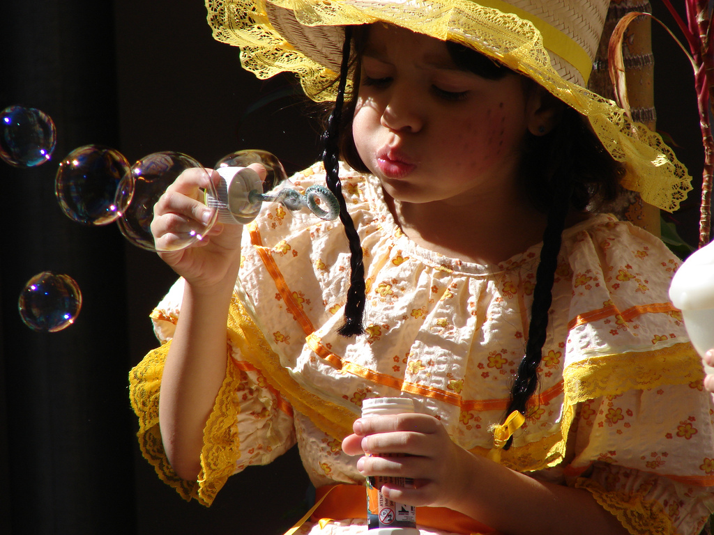
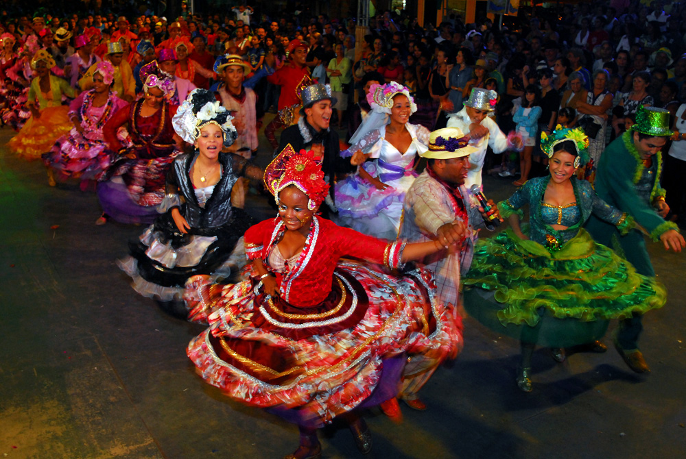
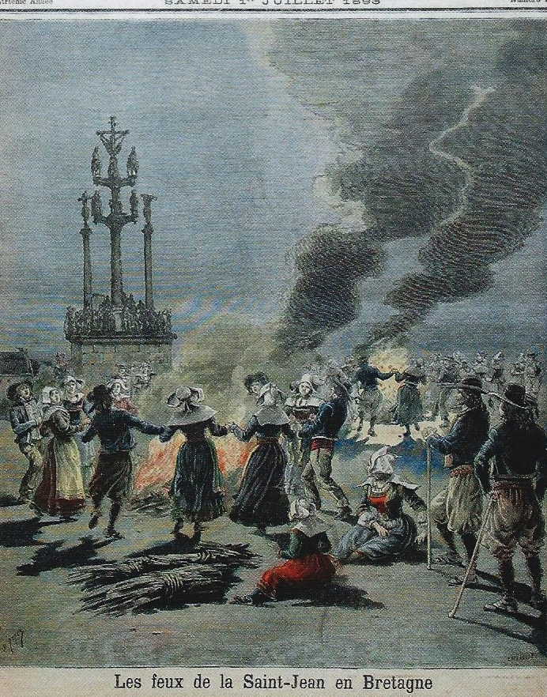
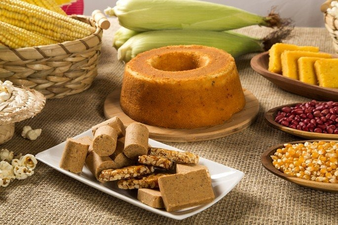
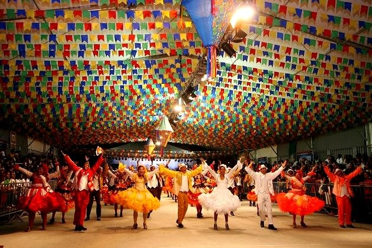
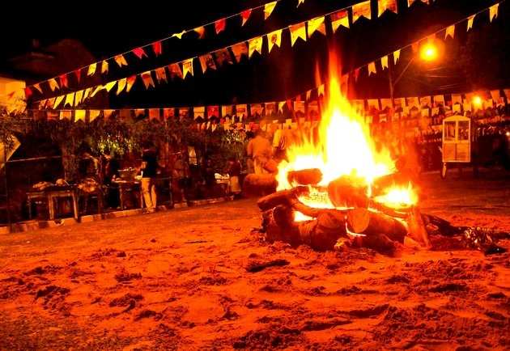
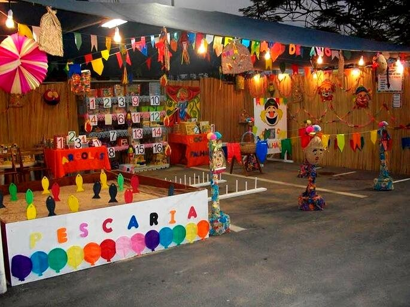
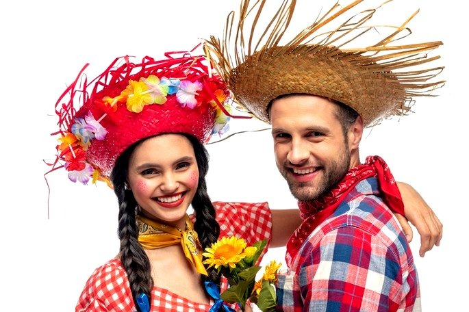

Uma celebração repleta de diversão, comida típica e música tradicional.

O que é a Festa Junina?
As festas juninas no Brasil são comemorações anuais adaptadas do solstício de verão europeu, celebrando a
natividade de São João Batista. Introduzidas durante o período colonial pelos portugueses, as
festividades ocorrem durante todo o mês de junho em todo o país. Elas coincidem com o fim das estações
chuvosas no Nordeste, permitindo que as pessoas agradeçam a São João pela chuva. Além disso, as festas
celebram a vida rural e apresentam elementos tradicionais como roupas, comidas e danças típicas, como a
quadrilha.

A quadrilha é uma dança folclórica tradicional das festas
juninas, que envolve um grupo de pessoas dançando em pares, seguindo uma coreografia pré-determinada, ao
som de música típica, repleta de passos e movimentos característicos.
Origem da Festa Junina
A festa junina tem origem pagã e era uma celebração em homenagem aos deuses da natureza e da fertilidade.
No hemisfério norte, as pessoas comemoravam a chegada do verão em junho, época da colheita de cereais
como o milho. As fogueiras, símbolo atual das festas juninas, também surgiram nessa festividade pagã. A
igreja adotou a festa junina e a tornou religiosa para combater sua popularidade. Os portugueses
trouxeram a festa junina para o Brasil durante o período colonial, chamando-a de Festa Joanina. Os três
santos católicos mais populares do mês de junho - São João, Santo Antônio e São Pedro - passaram a ser
celebrados nas festas juninas. A festa sofreu influências africanas e indígenas, tornando-se única em
cada região do Brasil.

Fogueira do solstício de verão/dia de São João com
festividades em frente a um santuário de calvário cristão na Bretanha, 1893
Características da Festa Junina
Muitas tradições que acompanham essa comemoração representam os principais símbolos das festas juninas
que incluem: as comidas, as danças típicas, os balões, a fogueira, as brincadeiras e as roupas.
Comidas de Festa Junina:
O milho é um alimento muito importante nessas comemorações e, por isso, diversas comidas típicas de
festa junina levam esse ingrediente.
Os principais pratos típicos de festa junina são: pipoca, paçoca, pé de moleque, canjica,
cachorro-quente, pamonha, curau, bolo de milho, arroz-doce, pinhão, cuscuz e tapioca.
Já as bebidas mais tradicionais são: vinho quente e quentão.

Danças típicas da Festa Junina:
Nas festas juninas ouve-se e dança-se forró. A quadrilha junina é, todavia, a dança típica da festa.
Ela tem origem nas danças de salão na França e consiste numa bailada de casais caracterizados com
vestimenta tipicamente caipira.
Uma coreografia chamada de casamento caipira é feita em homenagem a Santo Antônio, o santo
casamenteiro.

Balões e fogueira na Festa Junina:
Os balões são tradicionais, embora atualmente existam restrições por questões de segurança.
Tradicionalmente, a soltura de balões indica o início das comemorações.
A fogueira também faz parte do cenário da festa. De origem pagã, ela simboliza a proteção contra os
maus espíritos.
A tradição foi mantida pelos católicos, que dedicaram uma forma de fogueira diferente para cada
santo: a quadrada é de Santo Antônio; a redonda de São João; e a triangular de São Pedro.

Brincadeiras da Festa Junina
Brincadeiras como a cadeia, pau de sebo, pescaria, correio-elegante, saltar a fogueira, argola,
entre outros, não podem faltar. Estão incluídas também as simpatias - que acabam carregando um pouco
do tom de divertimento.
No dia 13 de junho as igrejas distribuem o “pãozinho de Santo Antônio”, o qual deve ser comido pelas
mulheres que procuram marido.

Roupas de Festa Junina
As roupas tradicionais de festa junina são tipicamente caipiras, com vestimentas bem coloridas e de
estampa xadrez.
Inserida no contexto das festas juninas, a Festa de São João acontece nos dias 23 e 24 de junho,
para celebrar o nascimento deste Santo Popular, conhecido como o Santo festeiro.
São João nasceu teria nascido no dia 24 de junho e foi um dos santos mais próximos de Jesus Cristo,
participando de seu batizado nas margens do Rio Jordão. Por isso, o Dia de São João é 24 de junho.

Música trdicional da Festa Junina
As músicas tradicionais da festa junina são características e animadas, refletindo a alegria e a cultura
popular brasileira. Abaixo temos uma das músicas mais icônicas dessa incrível festa: